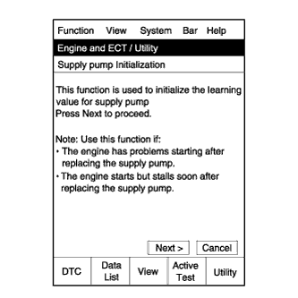
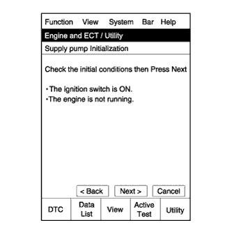
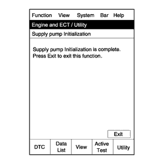

ECD SYSTEM > INITIALIZATION |
| FUEL SUPPLY PUMP INITIALIZATION PROCEDURE |
 |
Connect the intelligent tester to the DLC3.
Turn the engine switch on (IG).
Turn the tester on.
Enter the following menus: Powertrain / Engine / Utility / Supply Pump Initialization.
Press "Next".
 |
Press "Next".
 |
Press "Exit".
Start the engine to check if the initialization is complete. If the engine cannot be started, repeat the initialization procedures from the beginning.
Idle the engine for at least 1 minute under the following conditions:
Initialization is complete.